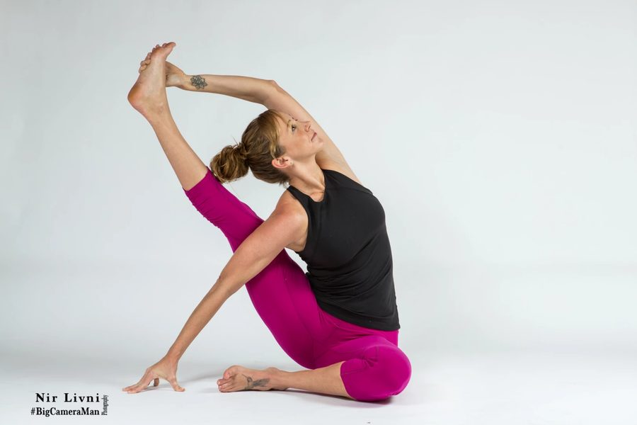
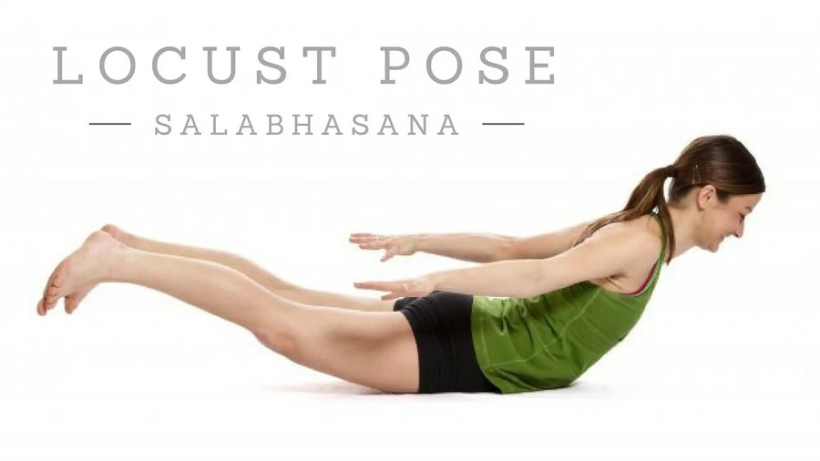
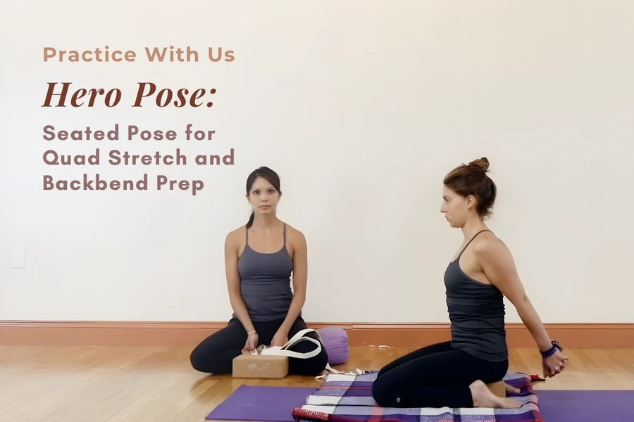
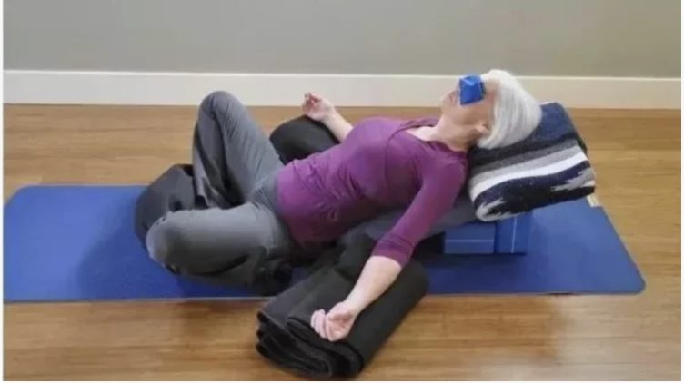
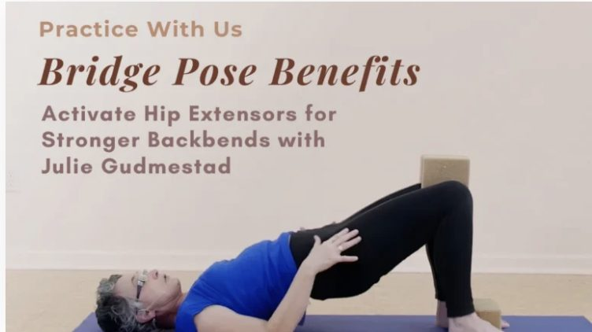
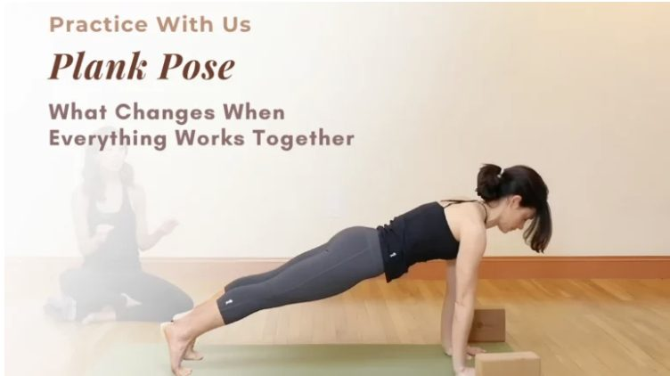
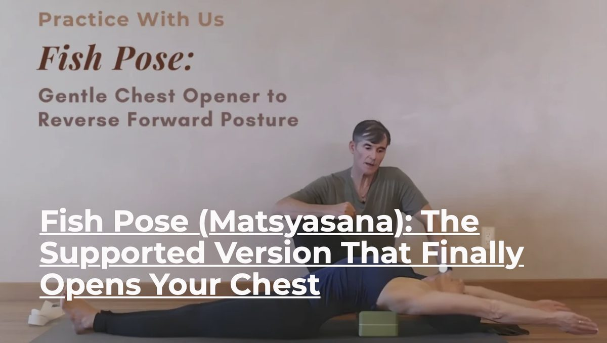
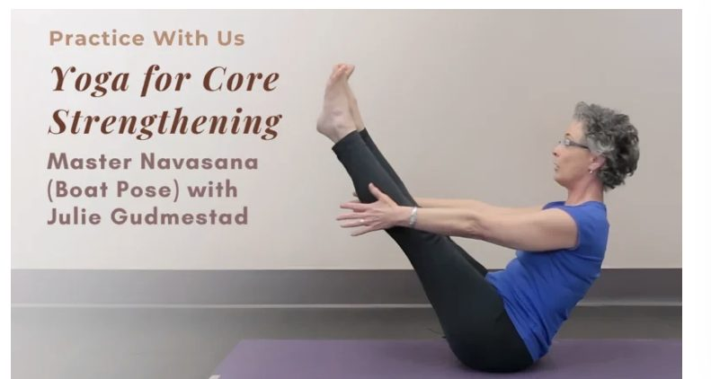
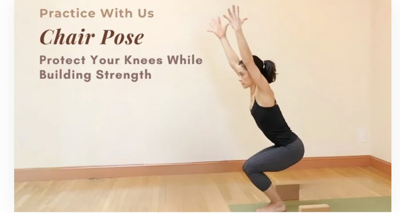
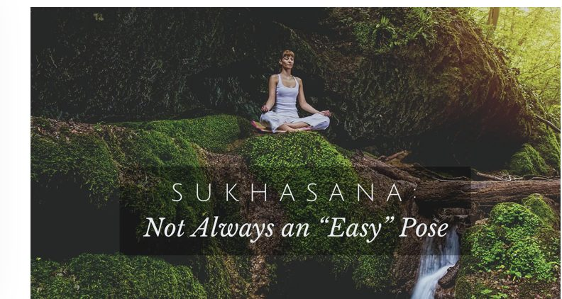

Pose Library Blog
Break Out of the Box!
- Explore 1,000+ Yoga 2.0 Pose Modifications
- Get Detailed Teaching & Practice Tips
- Make Yoga Truly Your Own
What's New In The Pose Library Blog

Pose TipsFinding Your Way to Seated Compass Pose (Parivrtta Surya Yantrasana)
Seated Compass Pose, also referred to as Sundial Pose (Parivrtta = revolved, Surya = sun, Yantra = instrument)…

Pose Tips4 Ways to Practice Locust Pose
Locust Pose (Salabhasana) is a simple backbend that strengthens the entire back of your…

Practice With UsHero Pose (Virasana): The Quad Stretch Your Hips Have Been Waiting For
Sitting in chairs all day shortens the quadriceps and hip flexors — the muscles…

Pose TipsSupta Baddha Konasana (Reclining Bound Angle Pose): Rest and Digest
Most of us have to wait about eating a meal within two hours of an asana…

Teaching TipsBackbending for Beginners: Activate Your Hip Extensors for Stronger Backbends
Most yoga practitioners stretch their hamstrings constantly. Far fewer ever strengthen them. That imbalance…

Practice With UsPlank Pose: What Changes When Everything Works Together
Plank Pose (Phalakasana) looks deceptively simple. Hold your body in a straight line. Support…

Practice with us
Fish Pose (Matsyasana): The Supported Version That Finally Opens Your Chest
Most people know that sitting at a desk all day rounds the shoulders forward. This supported variation uses props to reverse forward posture — gently, safely, and effectively.
Read the ArticleYoga for Every Body
How to Avoid the Top 3 Pitfalls of Forward Bends
With Julie Gudmestad

Practice With UsBoat Pose (Navasana): A Smarter Path to Core Strength
Boat Pose (Navasana) has a reputation for being a test. Something you either pass…

Practice With UsChair Pose: Build Leg Strength Without Straining Your Knees
Chair Pose (Utkatasana) has a reputation for being demanding. Most people feel the burn…

Pose Tips5 Steps to Finding Ease in Sukhasana — "Easy" Pose
Asana practice is meant to support the settling of the mind. The definition of yoga, according…
Upcoming Courses
Study Online with our Yoga Wellness and Teacher Ed. Courses
Online course